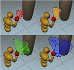

|  |
Hyun-Jun Park, WeDong Choi, Seung-Ho Jang, Jeong-Mo Hong, "Punching Motion Generation using Reinforcement Learning in Physics Based Environment", Journal of Korea Multimedia Society, Vol. 21, No. 8, p. 969~981, August 2018
경로 탐색 기법과 강화학습을 사용한 주먹 지르기동작 생성 기법 |